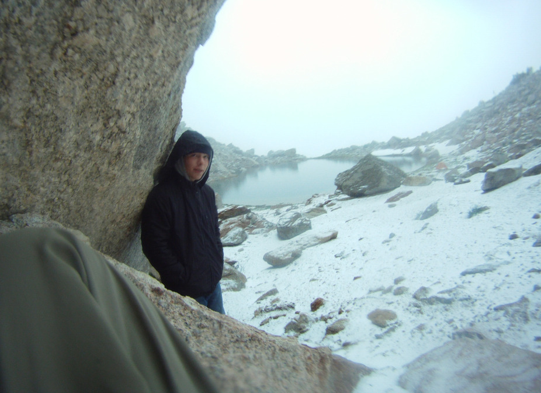
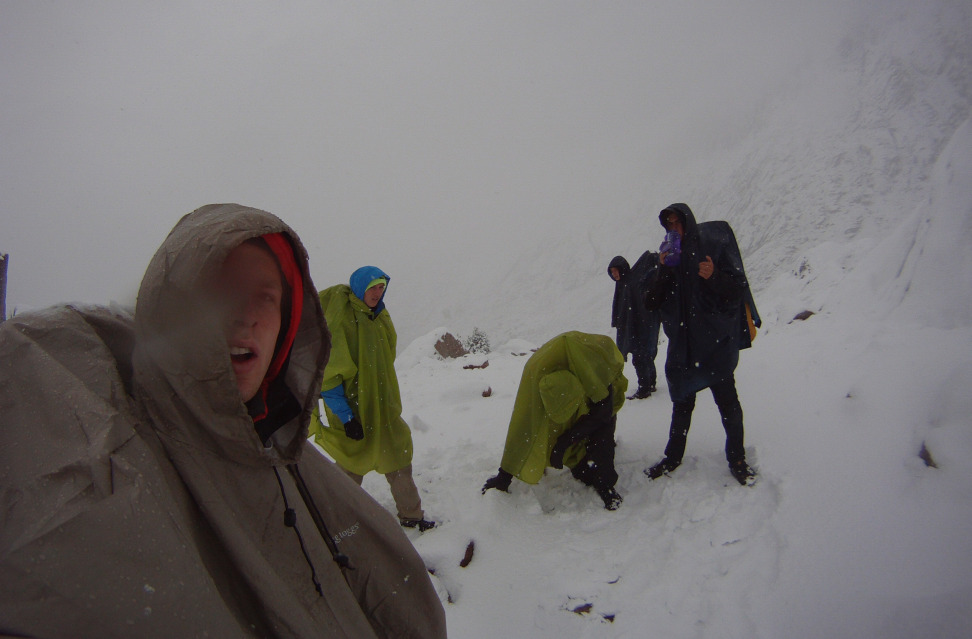
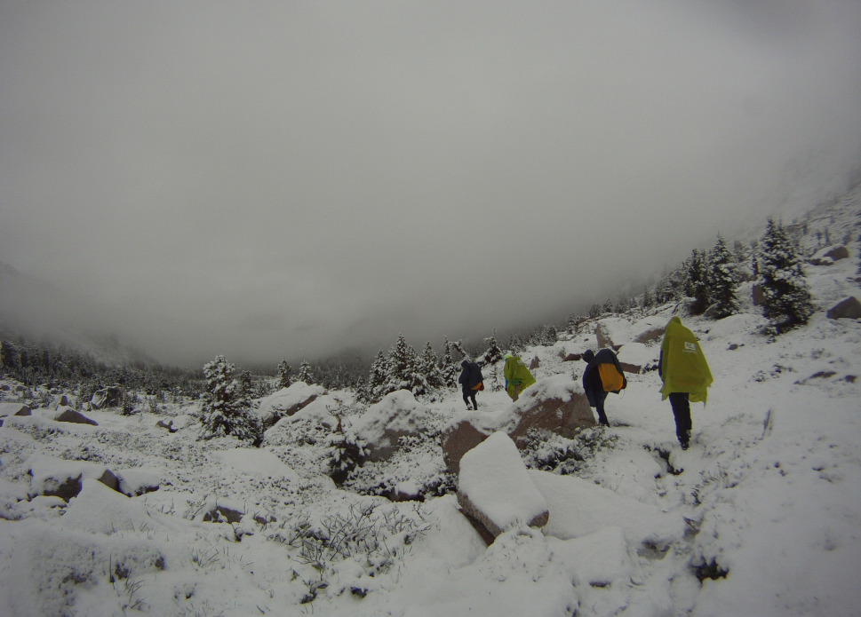
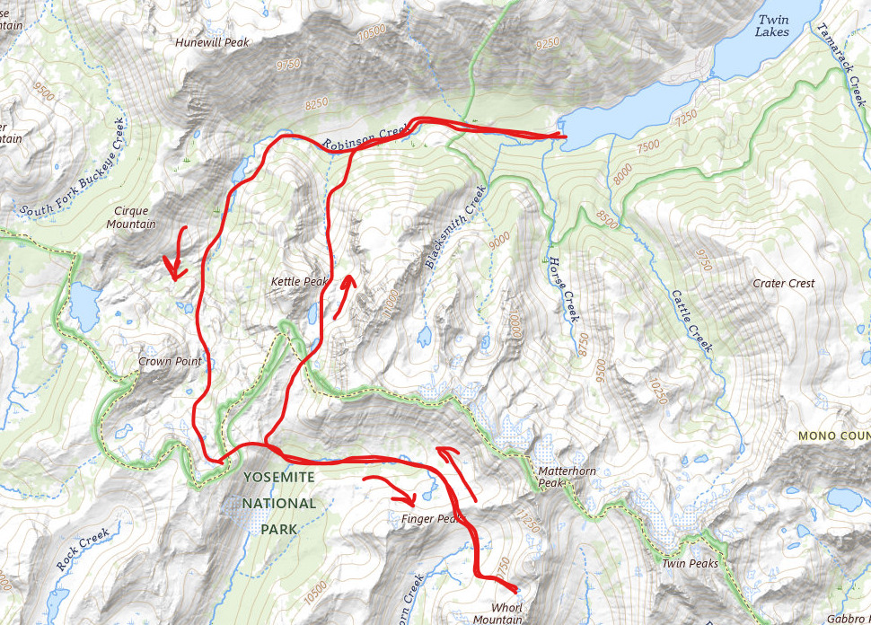

Sawtooth Ridge and Little Slide Canyon, Hoover Wilderness - Backpacking
Location: Sawtooth Ridge and Little Slide Canyon, Hoover Wilderness Type of trip: Backpacking Date: July 2015 People: Matt Lane, Jack Stanger, Zach Reiley, Ryan Callahan
My first ever backpacking trip was out of Twin Lakes in 2007. Eight years later, in 2015, I decided to revisit the area with some friends. The trip was one of the wildest I’ve ever been on.
My friends and I had all just graduated high school and planned a trip for the second weekend of July. The crew consisted of Jack, Matt, and Zach, my typical backpacking crew, and Ryan, a
first time packer. Ryan had brought up going backpacking an uncanny amount of times during the school year, which practically inspired this trip.
Thunderstorms were projected all weekend, but my dad assured us that the storms will only make the trip better. We departed Robinson Creek Trailhead around noon and made our way up to Crown Lake.
Rain was off and on. We looked like hunchbacks with our ponchos slung over our packs and bodies as we hauled up the trail. The lake offered nice views and intermittent mosquitos.
The next day’s goal was to get to the Horse Creek drainage, which we would then take back to the car the day after that. The rain started early. At the top of Mule Pass we fearfully peered out
towards the vast mountains ahead. Lighting and thunder struck every minute or so and we contemplated if our fishing rods were putting us at risk of electrical execution. Ditching the rods was
not an option, so we quickly made our way below Sawtooth Ridge and up Burro Pass. Views were outstanding.
At Burro Pass, I pointed out what I thought was the next day’s cross country route over Matterhorn Pass. A huge dark cloud prevented us from getting a good look at it. Ryan didn’t need anymore
of a look and stated “were going over that?”. We all laughed and figured we’d have a better eye on it in the morning with the sky hopefully clear. The rest of the day was spent hiking cross
country up to an unnamed lake directly below Whorl Mountain. We set up camp at a whopping 11,000 feet elevation. Ryan continued to question the future route of our trip.
Early the next morning, I awoke to Ryan nudging me and absurdly remarking that it was snowing outside. I told him to go back to bed, thinking it was nothing more than some clouds and hail.
Fifteen minutes later, I was awoken again to the trembling voice of Ryan insisting that it was snowing. Jack, who was also in the tent, angrily spouted “Go back to bed!”. To please Ryan,
I peaked out the tent door.
The lake was clouded over and something strange was falling out of the sky. The precipitation was pellet shaped like hail, but soft like snow. We got out of our tent to assess it. Soon enough
it was dumping. We retreated to an overhanging rock, where we noticed the carpet of white in front of us. We all gasped and concurrently remarked, “Holy sh*t it’s snowing”. No longer were there
pellets but instead large snowflakes falling from above. It was July 8th and us high schoolers were caught in a snowstorm, off trail, 12 miles from our trailhead. “How bout this for a first time!”,
we shouted at Ryan.
Matterhorn pass was no longer an option and we needed to retrace our steps to Robinson Creek Trailhead. It was a long way out, so we broke camp immediately. Matt, who was fitted in jeans and a
hoodie, announced that his hands were so cold that he could not tie his shoes. I helped him out, then we made our way over the snow topped boulder field to the valley below. Eventually we found
the trail at the top of Burro Pass. About 6 inches of snow had fallen in the past 3 hours.
The storm let up on the way down Burro Pass. Views of the snow covered landscape were unreal. By the time we were at the base of Mule Pass, the snow had already started melting. Here we were at
a junction with Little Slide Canyon, a potential trailless shortcut to Robinson Creek. With no background knowledge of the canyon, we elected to take the short cut. Ryan blankly looked at us and
said, “Off trail again?”. Zach had already started making his way up the canyon.
At the high point of the canyon we looked down onto Ice and Maltby Lakes. The incredible views had already made the shortcut worth it. However, the route down to Robison Creek was not so simple.
We boulder hopped, rock climbed, and even got to a point where we had to lower our packs with ropes to get down. We were exhausted and not making the smartest route decisions. The final push was
bushwhacking through dense brush and over Robinson Creek.
We celebrated when we finally found the trail. Ryan went to take out his brand new GoPro to get a victory photo, but it was missing. The triumph disappeared. Now even being absolutely war-torn,
Ryan elected to retrace his steps. I volunteered to tag along. After about 15 minutes of backtracking, we made it to Robinson Creek, which we had previously hurdled ourselves across. And sure
enough, sitting in the tall grass on the edge of the creek was Ryan’s GoPro. We erupted with joy, almost to the point of tears.
I’d never felt so beat once we got back to the car. We knew we had just experienced a trip of a lifetime.
Here is a snippet from NOAA’s July 2015 Weather Summary that reports on the snow storm we experienced,
Thunderstorms were forming along the Sierra Nevada crest; there was enough cold air to produce snow in the higher elevations of the Sierra, or just below elevation 10,000 feet. In fact,
Yosemite National Park reported 3 inches of snow that evening at Tioga Pass. This snow was enough to shut down Highway 120 for about 2 hours.

"Yo John, it's snowing"

July 8th snowstorm atop Burro Pass

Once in a lifetime views through Sawtooth Ridge area

USGS map (Date posted: 2024-09-18)